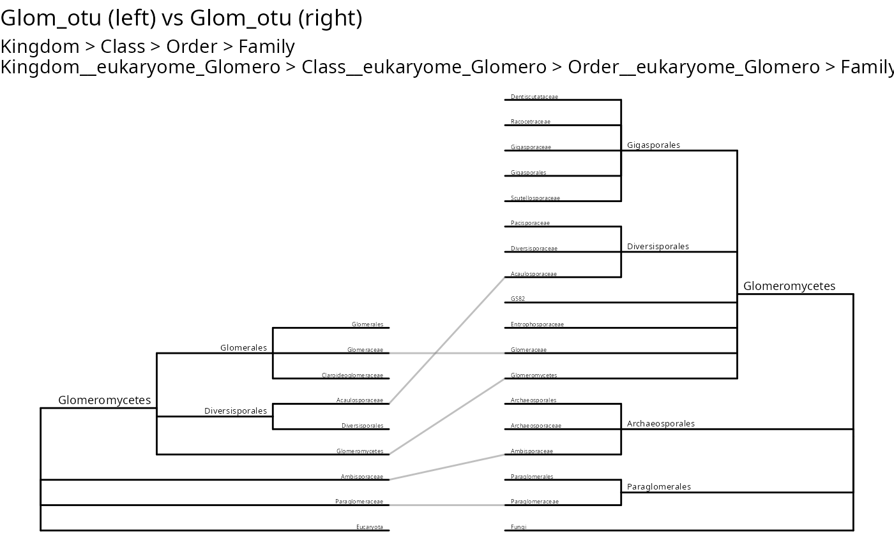

Creates a visualization of two taxonomy trees facing each other, with matching taxa aligned horizontally. Optionally draws lines connecting matching leaf taxa. Useful for comparing taxonomic assignments from different databases or classification methods.
Usage
tc_linked_trees(
physeq_1,
physeq_2 = NULL,
ranks_1,
ranks_2,
tree_distance = 1,
show_tip_links = TRUE,
link_by_taxa = FALSE,
link_alpha = 0.5,
link_color = "grey50",
show_labels = TRUE,
label_size = 2,
internal_node_singletons = FALSE,
use_taxa_names = FALSE
)Arguments
- physeq_1
(required) A
phyloseq-classobject for the left tree.- physeq_2
(phyloseq, default NULL) A
phyloseq-classobject for the right tree. If NULL, uses physeq_1 (useful for comparing different rank columns from the same object).- ranks_1
(character vector, required) Taxonomic rank names to use for the first tree. Must match column names in physeq_1's tax_table.
- ranks_2
(character vector, required) Taxonomic rank names to use for the second tree. Must match column names in physeq_2's tax_table.
- tree_distance
(numeric, default 1) Distance between the two trees.
- show_tip_links
(logical, default TRUE) Whether to draw lines between matching leaf taxa (tips). Internal nodes are never linked.
- link_by_taxa
(logical, default FALSE) If TRUE, links are drawn based on taxa (ASV/OTU) correspondence: for each taxon in physeq_1, a link is drawn to its corresponding tip in tree_2 based on its taxonomy. Line width is proportional to the number of taxa sharing each link. Requires that physeq_1 and physeq_2 have the same taxa names (rownames).
- link_alpha
(numeric, default 0.5) Transparency of the correspondence lines.
- link_color
(character, default "grey50") Color of the correspondence lines. Use NULL to color by label.
- show_labels
(logical, default TRUE) Whether to show node/tip labels.
- label_size
(numeric, default 2) Base size for labels. Labels are scaled by depth: shallower nodes (closer to root) get larger text (up to 1.5x), deeper nodes get smaller text (down to 0.6x). All labels are positioned above their branch to avoid overlap.
- internal_node_singletons
(logical, default FALSE) Whether to create internal nodes for singletons. Passed to
taxo2tree.- use_taxa_names
(logical, default FALSE) Whether to use taxa names (e.g., ASV_1, ASV_2) as terminal leaves. If FALSE (default), collapses identical taxonomy paths and uses the lowest rank value as tip labels. Passed to
taxo2tree.
Examples
# Compare two taxonomic assignments from the same phyloseq object
# using different rank columns (physeq_2 defaults to physeq_1)
tc_linked_trees(
Glom_otu,
ranks_1 = c("Kingdom", "Class", "Order", "Family"),
ranks_2 = c(
"Kingdom__eukaryome_Glomero", "Class__eukaryome_Glomero",
"Order__eukaryome_Glomero", "Family__eukaryome_Glomero"
)
)
#> Found more than one class "phylo" in cache; using the first, from namespace 'phyloseq'
#> Also defined by ‘tidytree’
#> Found more than one class "phylo" in cache; using the first, from namespace 'phyloseq'
#> Also defined by ‘tidytree’

if (FALSE) { # \dontrun{
# Link by taxa with line width proportional to ASV count
tc_linked_trees(
Glom_otu,
ranks_1 = c("Kingdom", "Class", "Order", "Family"),
ranks_2 = c(
"Kingdom__eukaryome_Glomero", "Class__eukaryome_Glomero",
"Order__eukaryome_Glomero", "Family__eukaryome_Glomero"
),
link_by_taxa = TRUE
)
# Without tip links
tc_linked_trees(
Glom_otu,
ranks_1 = c("Kingdom", "Class", "Order", "Family"),
ranks_2 = c(
"Kingdom__eukaryome_Glomero", "Class__eukaryome_Glomero",
"Order__eukaryome_Glomero", "Family__eukaryome_Glomero"
),
show_tip_links = FALSE
)
# Color links by label
tc_linked_trees(
Glom_otu,
ranks_1 = c("Kingdom", "Class", "Order", "Family"),
ranks_2 = c(
"Kingdom__eukaryome_Glomero", "Class__eukaryome_Glomero",
"Order__eukaryome_Glomero", "Family__eukaryome_Glomero"
),
link_color = NULL
) +
theme(legend.position = "none")
# Using one phyloseq object for both trees
# and different rank levels with link_by_taxa
tc_linked_trees(
Glom_otu,
ranks_1 = c("Kingdom", "Class", "Order", "Family"),
ranks_2 = c(
"Kingdom__eukaryome_Glomero", "Class__eukaryome_Glomero",
"Order__eukaryome_Glomero", "Family__eukaryome_Glomero"
), link_color = NULL,
link_by_taxa = TRUE,
) +
theme(legend.position = "none")
} # }